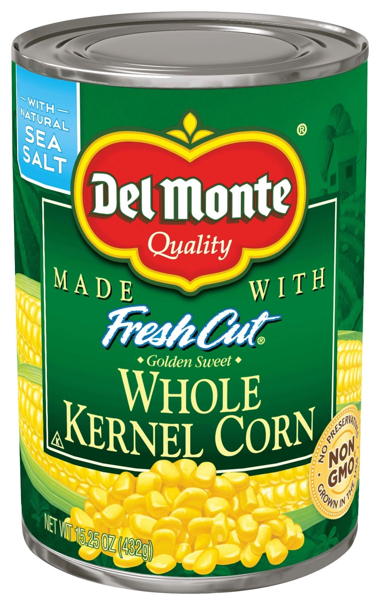

This is my implementation of a ML approach for image compression with the singular value decomposition (SVD) as well as the implementation of the Laplacian spectral clustering for a spectral community detection.
In this blog post, I talk about my learnings from Dr. Timnit Gebru’s talk on ‘Eugenics and the Promise of Utopia through Artificial General Intelligence’.
This is my experimentation for a machine learning model onto individual characteristics given a dataset from the American Community Survey’s Public Use Microdata Sample (PUMS). Then, I’ll conduct a fairness audit to assess whether my algorithm possesses bias with respect to demographic characteristics.
This is my implementation for the least-squares linear regression with several experimentations utilizing LASSO regularization.

This is my implementation for the Kernel Logistic Regression using linear empirical risk minimization to learn nonlinear decision boundaries.
This is my implementation of gradient descent, a momentum method, and stochastic gradient descent for the optimization for logistic regression.
This is my implementation for the Perceptron Algorithm using numerical programming on synthetic data sets.
An example blog post illustrating the key techniques you’ll need to demonstrate your learning in CSCI 0451.